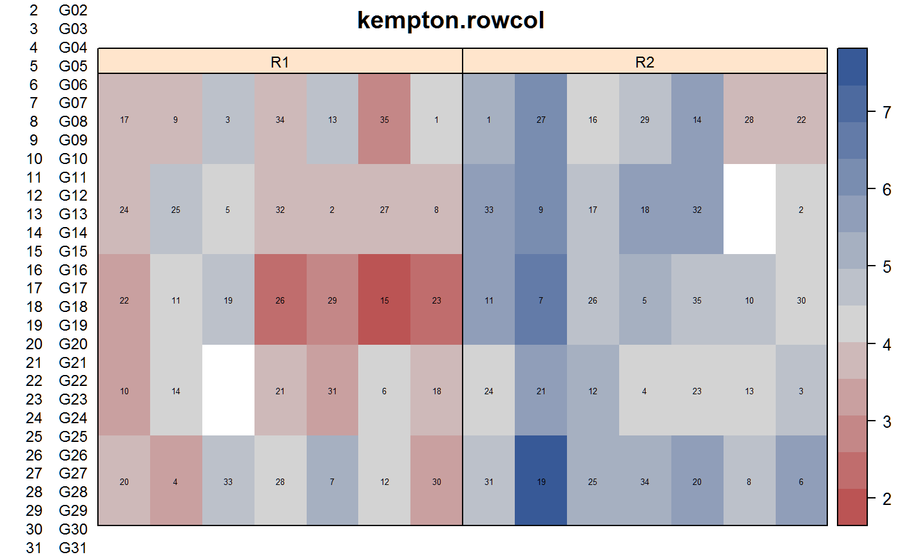

kempton.rowcol.RdRow-column experiment of wheat, 35 genotypes, 2 reps.
A data frame with 68 observations on the following 5 variables.
repreplicate factor, 2 levels
rowrow
colcolumn
gengenotype factor, 35 levels
yieldyield
Included to illustrate REML analysis of a row-column design.
R A Kempton and P N Fox, Statistical Methods for Plant Variety Evaluation, Chapman and Hall, 1997.
# \dontrun{ library(agridat) data(kempton.rowcol) dat <- kempton.rowcol dat <- transform(dat, rowf=factor(row), colf=factor(col)) libs(desplot) desplot(dat, yield~col*row|rep, num=gen, out1=rep, # unknown aspect main="kempton.rowcol")# Model with rep, row, col as random. Kempton, page 62. # Use "-1" so that the vcov matrix doesn't include intercept libs(lme4) m1 <- lmer(yield ~ -1 + gen + rep + (1|rep:rowf) + (1|rep:colf), data=dat) # Variance components match Kempton. print(m1, corr=FALSE)#> Linear mixed model fit by REML ['lmerMod'] #> Formula: yield ~ -1 + gen + rep + (1 | rep:rowf) + (1 | rep:colf) #> Data: dat #> REML criterion at convergence: 70.0235 #> Random effects: #> Groups Name Std.Dev. #> rep:colf (Intercept) 0.4387 #> rep:rowf (Intercept) 0.2531 #> Residual 0.3002 #> Number of obs: 68, groups: rep:colf, 14; rep:rowf, 10 #> Fixed Effects: #> genG01 genG02 genG03 genG04 genG05 genG06 genG07 genG08 genG09 genG10 #> 4.203 3.304 4.487 2.910 3.785 4.799 4.474 3.991 3.739 3.717 #> genG11 genG12 genG13 genG14 genG15 genG16 genG17 genG18 genG19 genG20 #> 4.320 4.335 4.071 4.154 2.605 3.344 3.542 3.953 5.059 3.708 #> genG21 genG22 genG23 genG24 genG25 genG26 genG27 genG28 genG29 genG30 #> 3.982 3.401 2.813 3.277 4.029 3.148 4.089 3.682 3.183 3.342 #> genG31 genG32 genG33 genG34 genG35 repR2 #> 3.248 3.652 4.303 3.687 2.991 1.222# Standard error of difference for genotypes. Kempton page 62, bottom. covs <- as.matrix(vcov(m1)[1:35, 1:35]) vars <- diag(covs) vdiff <- outer(vars, vars, "+") - 2 * covs sed <- sqrt(vdiff[upper.tri(vdiff)]) min(sed) # Minimum SED#> [1] 0.35107#> [1] 0.3853689#> [1] 0.5357671# }